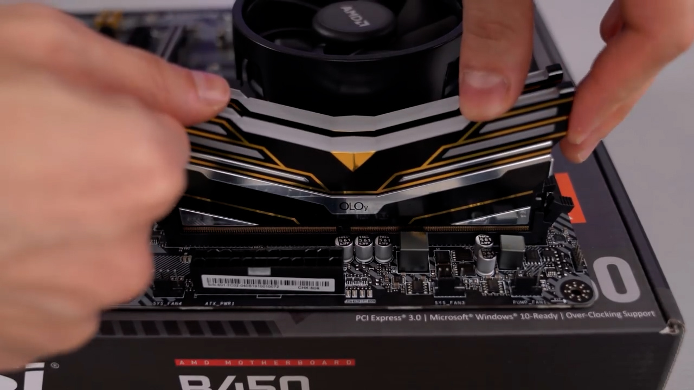
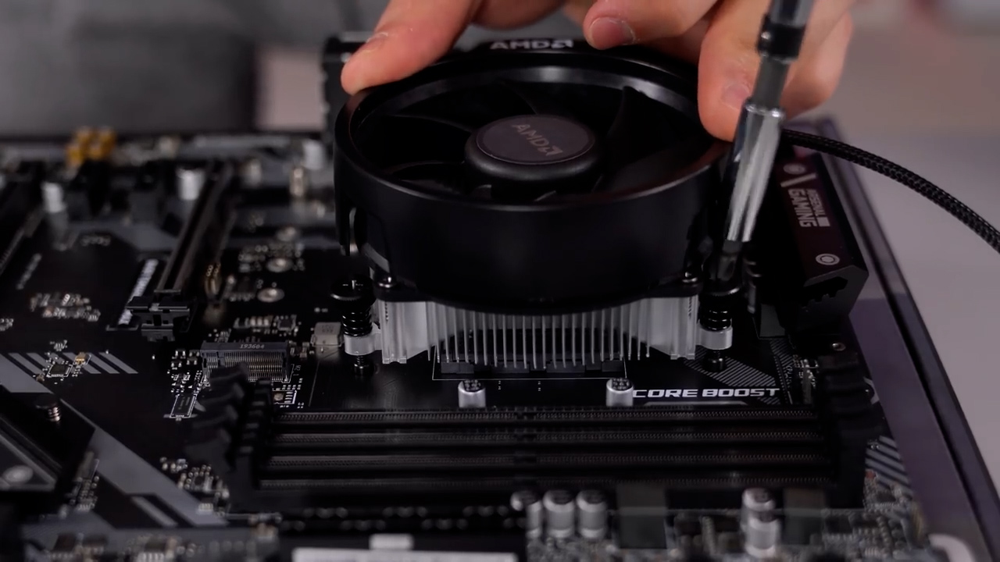
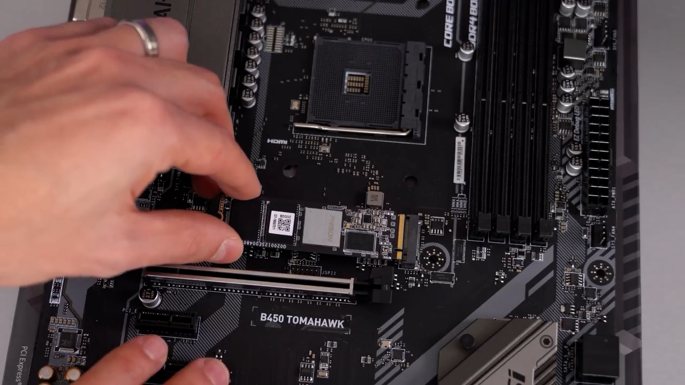
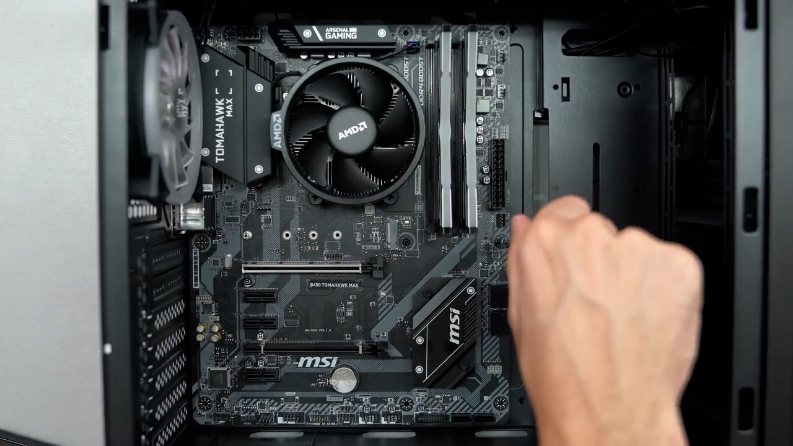
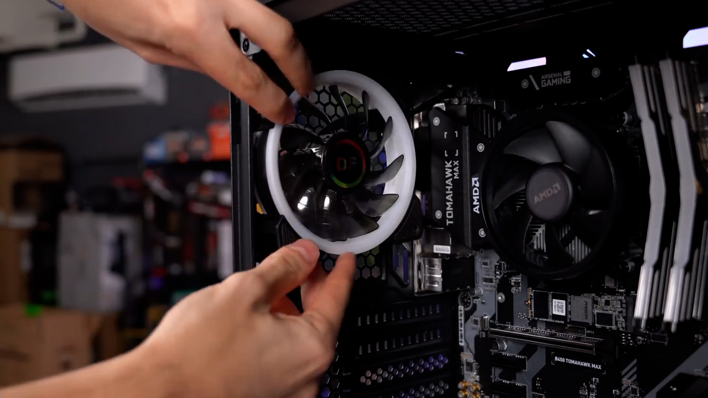
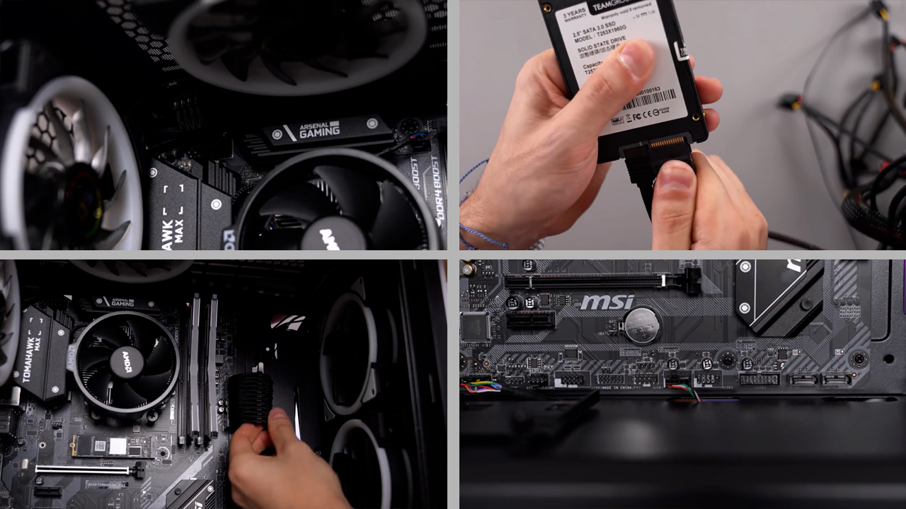
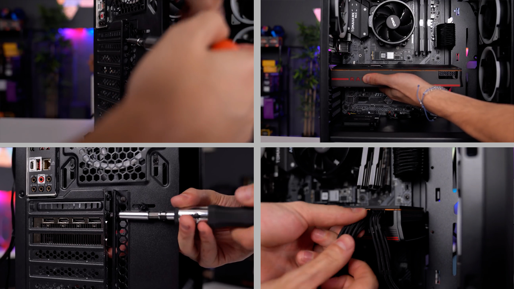
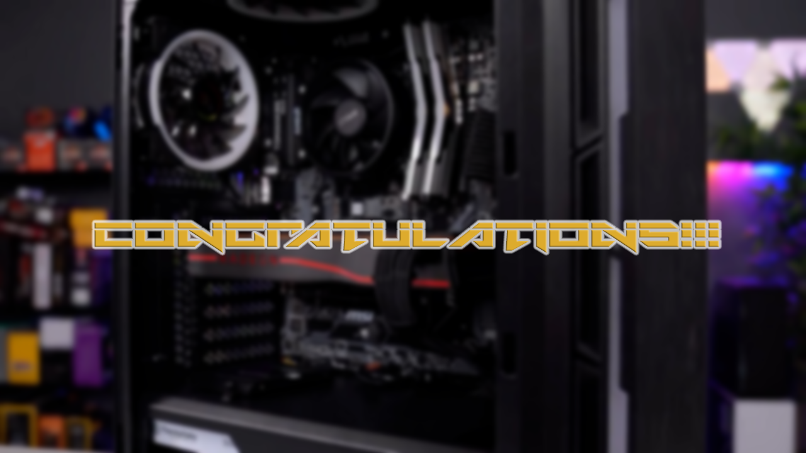

Ακολουθώντας τον συγκεκριμένο αναλυτικό οδηγό θα είστε σε θέση να συναρμολογήσετε τον πρώτο σας υπολογιστή χωρίς τη χρήση προαπαιτούμενων γνώσεων.
Παρά την προκατάληψη σχετικά με τη δυσκολία αυτής της διαδικασίας θα διαπιστώσετε πως στην πραγματικότητα είναι κάτι απλό που οποιοσδήποτε μπορεί να
υλοποιήσει επιτυχώς.
Αφού ολοκληρώσετε τις επιλογές σας σχετικά με τα διάφορα κομμάτια από τα οποία θα απαρτίζεται το σύστημά σας ,προτάσεις για τα
οποία μπορείτε να βρείτε στη σελίδα "Προτάσεις Hardware", μπορείτε να ξεκινήσετε την διαδικασία για την οποία απαιτούνται ένα κατσαβίδι σταυρωτό, μια
μη αγώγιμη επιφάνεια καθώς και μερικά πλαστικά δεματικά προκειμένου να τακτοποιήσετε τα καλώδια.
Αφού αφαιρέσετε την μητρική από το προστατευτικό αντιστατικό της κάλυμμα πρέπει να τοποθετήσετε τον επεξεργαστή σύμφωνα με την παρακάτω φωτογραφία
ταιριάζοντας το χρυσό τρίγωνο που βρίσκεται σε μία από τις γωνίες του με τον κύκλο που θα βρείτε σε μία από τις γωνίες της αντίστοιχης υποδοχής στη μητρική.
Επόμενο βήμα είναι η εγκατάσταση της ram.Στην συγκεκριμένη περίπτωση η μητρική της φωτογραφίας διαθέτει τέσσερις υποδιχές αλλά εμείς θα χρησιμοποιήσουμε μονο δύο και συγκεκριμένα την πρώτη από δεξιά και έπειτα αφήνοντας μια υποδοχή κενή θα χρησιμοιποιήσουμε την επόμενη.Το σημείο αυτό είναι σημαντικό στην περίπτωση όπου δεν διαθέτετε τέσσερις ram καθώς μόνο με τη σωστή τοποθέτηση οι ram θα είναι σε λειτουργία dual channell προσφέροντας τις καλύτερες δυνατές αποδόσεις.
Μετά την εγκατάσταση του επεξεργαστή και της ram ακολουθεί η ψύκτρα του επεξεργαστή βιδώνοντας την σε κάθε γωνία με τις βίδες που εμπεριέχονται στην συσκευασία του επεξεργαστή.Απαραίτητο είναι να συνδέσετε το τετράπινο καλώδιο του ανεμιστήρα στην υποδοχή "cpu fan" πάνω και δεξιά από τον επεξεργαστή.
Εάν διαθέτετε ssd τύπου m.2 ή nvme σε αυτό το σημείο θα πρ'επει να τον τοποθετήσετε στην αντίστοιχη υποδοχή όπως φαίνεται στην επόμενη εικόνα.
Μετά την προετοιμασία τοποθετήσετε το io shield στο πίσω μέρος του κουτιού (στις περισσότερες καινούργιες μητρικές είναι συνήθως ενσωματομένο στην μητρική) και έπειτα την ίδια την μητρική στο κουτί και βιδώστε την με τις αντίστοιχες βίδες πουθα βρείτε στην συσκευασία της.
Σε αυτό το σημείο πρέπει να τοποθετήσετε τα ανεμιστηράκια στο κουτί και να συνδέσετε τα καλώδια τους στις υποδιχές "chasis fan" που θα βρείτε στην σε διάφορα σημεία της μητρικής.
Επόμενο βήμα είναι η τοποθέτηση του τροφοδοτικόυ στο κάτω μέρος του κουτιού και η σύνδεση όλων των απαραίτητων καλωδίων στα διάφορα εξαρτήματα σύμφωνα με τις ετικέτες που υπάρχουν στα καλώδια και σε κάθε εξάρτημα αντίστοιχα.
Το τελευταίο βήμα είναι η εγκατάστασητης κάρτας γραφικών (εάν διαθέτετε) στο πρώτο x16 pcie slot της μητρικής αφού αφαιρέσετε τα δυο προστατευτικά καλύμματα στο πίσω μέρος του κουτιού και η σύνδεση των καλωδίων τροφοδοσίας σύμφωνα με τις παρακάτω φωτογραφίες.
Σε αυτό το σημείο έχετε ολοκληρώσει την συναρμολόγηση του καινούργιου σας υπολογιστή και μπορείτε να εγκαταστήσετε ένα λειτουργικό σύστημά σύμφωνα με τις οδηγίες στην σελίδα "Οδηγός εγκατάστασης windows".
